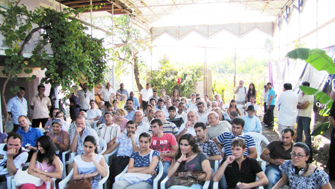
РЕСУРСЫ ПРИГРАНИЧЬЯ И МЕХАНИЗМЫ ИЗМЕНЕНИЯ СИТУАЦИИ НА ЛИНИИ СОПРИКОСНОВЕНИЯ
21 июля 2012
Текали - стык границ трех южнокавказских республик
Гражданское слушание с участием жителей Акстафы, Баку, Гюмри, Гянджи,Еревана, Иджевана, Казаха, Марнеули, Ноемберяна, Тбилиси, Товуза и приграничных сел Азербайджана, Армении и Грузии
Ассоциация «Текали», Грузия
Центр Регионального Партнерства и Развития Общин, Азербайджан
Кавказский Центр Миротворческих Инициатив, Армения
В рамках проекта «Символический суд по правам человека» при поддержке Национального Фонда Поддержки Демократии (США)
Фото: Онник Крикорян, Галина Петриашвили, Ираклий Чихладзе, Нугзар Кохреидзе, КЦМИ
Текали - стык границ трех южнокавказских республик
Гражданское слушание с участием жителей Акстафы, Баку, Гюмри, Гянджи,Еревана, Иджевана, Казаха, Марнеули, Ноемберяна, Тбилиси, Товуза и приграничных сел Азербайджана, Армении и Грузии
Ассоциация «Текали», Грузия
Центр Регионального Партнерства и Развития Общин, Азербайджан
Кавказский Центр Миротворческих Инициатив, Армения
В рамках проекта «Символический суд по правам человека» при поддержке Национального Фонда Поддержки Демократии (США)
Фото: Онник Крикорян, Галина Петриашвили, Ираклий Чихладзе, Нугзар Кохреидзе, КЦМИ
1. РЕСУРСЫ ПРИГРАНИЧЬЯ

Заур Даргали
Заур Даргали, Марнеули, Грузия: Дорогие друзья! Уважаемые гости! Я в первую очередь хочу поблагодарить организаторов, за то, что мне дали возможность выступить с докладом. Я долго думал, с какой стороны подойти к теме и том, что мы подразумеваем, когда говорим о ресурсе приграничья в Текалинском процессе . В итоге получился небольшой доклад с которым я вас ознакомлю.
Прежде чем перейти к теме хочу пожелать удачи всем людям, которые участвуют в Текалинском процессе, всем тем, кто хочет мира на Южном Кавказе, и я надеюсь, что этот процесс, который заложен в Текали будет иметь свои лучшие результаты.
Часто участники слушаний в Текали задают мне вопросы, кто живет в этих селах, живут ли армяне и грузины, поэтому в первую очередь хочу ознакомить вас с регионом, в частности Марнеульским муниципалитетом, где и находится село Текали. В регионе Квемо Картли, и в частности в Марнеульском муниципалитете, основную часть населения составляют турки, борчалинские турки (азербайджанцы), составляют до 85 процентов населения. Здесь живут также до 10 000 грузин и армян. Есть близко расположенные и даже смешанные армяно-азербайджанские, армяно-грузинские, грузино-азербайджанские села, где люди живут вместе или близко друг к другу.
Что касается взаимоотношений между людьми в регионе. Начнем с того, что я сам живу в городе Марнеули, и у меня соседи - армяне, наши дворы бок о бок. Как я помню с детства, у нас не было никаких проблем, мы всегда делились подарками во время праздников и это не особенный случай для Марнеули, таких случаев много. В моем окружении между армянами и азербайджанцами никаких серьезных проблем на национальной почве нет. В Грузии этого не было и во времена Нагорно Карабахского конфликта. У меня были одноклассники армяне, мы могли ссориться из-за чего то, драться, но это никогда не бывало на национальной почве, чаще всего из-за девушки☺.
Но какие-то эпизоды конечно же бывали. Я рассказывал Георгию, наш сосед, дядя Лева, однажды перенес свой гараж очень близко к входу в наш дом, и бабушка тогда сказала: Вот им не хватает захваченного Карабаха, они еще перед нашими дверьми землю захватывают.(смех) Или же был еще случай, когда я был маленьким, мы отдыхали в Тетрицкаро, это район неподалеку, там хорошая природа. Мы отдыхали там, и я подружился с ребятами-армянами, с девушкой и ее братом. Мы сдружились, играли вместе и однажды они пригласили меня домой, к себе, и когда я пошел к ним домой, я услышал, как ее мама что-то агрессивно говорит. Я услышал слово «турки», турки и что-то такое... очень агрессивное. С одной стороны, было обидно, но с другой стороны, тогда я уже начал понимать , что я вообще-то турок.(смех) Эти эпизоды говорят, что стереотипные моменты все-таки существуют, но есть лучшая сторона, есть хороший опыт взаимоотношений между армянами и азербайджанцами, которые живут в Грузии, и опыт совместного проживания без особых конфликтов. Это можно видеть на практике.
Прежде чем перейти к теме хочу пожелать удачи всем людям, которые участвуют в Текалинском процессе, всем тем, кто хочет мира на Южном Кавказе, и я надеюсь, что этот процесс, который заложен в Текали будет иметь свои лучшие результаты.
Часто участники слушаний в Текали задают мне вопросы, кто живет в этих селах, живут ли армяне и грузины, поэтому в первую очередь хочу ознакомить вас с регионом, в частности Марнеульским муниципалитетом, где и находится село Текали. В регионе Квемо Картли, и в частности в Марнеульском муниципалитете, основную часть населения составляют турки, борчалинские турки (азербайджанцы), составляют до 85 процентов населения. Здесь живут также до 10 000 грузин и армян. Есть близко расположенные и даже смешанные армяно-азербайджанские, армяно-грузинские, грузино-азербайджанские села, где люди живут вместе или близко друг к другу.
Что касается взаимоотношений между людьми в регионе. Начнем с того, что я сам живу в городе Марнеули, и у меня соседи - армяне, наши дворы бок о бок. Как я помню с детства, у нас не было никаких проблем, мы всегда делились подарками во время праздников и это не особенный случай для Марнеули, таких случаев много. В моем окружении между армянами и азербайджанцами никаких серьезных проблем на национальной почве нет. В Грузии этого не было и во времена Нагорно Карабахского конфликта. У меня были одноклассники армяне, мы могли ссориться из-за чего то, драться, но это никогда не бывало на национальной почве, чаще всего из-за девушки☺.
Но какие-то эпизоды конечно же бывали. Я рассказывал Георгию, наш сосед, дядя Лева, однажды перенес свой гараж очень близко к входу в наш дом, и бабушка тогда сказала: Вот им не хватает захваченного Карабаха, они еще перед нашими дверьми землю захватывают.(смех) Или же был еще случай, когда я был маленьким, мы отдыхали в Тетрицкаро, это район неподалеку, там хорошая природа. Мы отдыхали там, и я подружился с ребятами-армянами, с девушкой и ее братом. Мы сдружились, играли вместе и однажды они пригласили меня домой, к себе, и когда я пошел к ним домой, я услышал, как ее мама что-то агрессивно говорит. Я услышал слово «турки», турки и что-то такое... очень агрессивное. С одной стороны, было обидно, но с другой стороны, тогда я уже начал понимать , что я вообще-то турок.(смех) Эти эпизоды говорят, что стереотипные моменты все-таки существуют, но есть лучшая сторона, есть хороший опыт взаимоотношений между армянами и азербайджанцами, которые живут в Грузии, и опыт совместного проживания без особых конфликтов. Это можно видеть на практике.
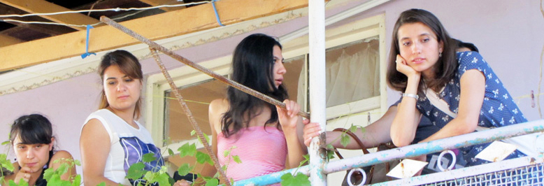
Из-за незнания государственного грузинского языка, многие азербайджанцы Грузии смотрят азербайджанские телеканалы, а армяне – армянские. Конечно же, это тоже влияет на создание поверхностных стереотипов, но и это никогда не приводило к серьезным разногласиям.
Недавно была свадьба Салмана, он - один из организаторов сегодняшней встречи и я бы хотел его сейчас публично поздравить (аплодисменты). На свадьбе Салмана мы общались с ребятами, с местными ребятами и прозвучала такая идея, одного нашего друга. Он тоже сейчас здесь, он сказал, что армянам и азербайджанцам не важно любить друг друга, быть близкими, важно то, что все мы хотим мира. То есть нужно создавать общие ценности. Любовь, близкие отношения –это не очень важный момент. У нас могут быть какие-то свои идеологии, но мы должны понимать, что хотим мира на Кавказе, и это должно перейти на первое место. Мы должны оставить на втором плане вопрос национальной идентификации и больше думать о том, как создавать взаимоотношения на других ценностях. Например, прозвучала идея, что нужно строить экономические отношения.
Говоря о ресурсе приграничья, хочу отметить, что для нас всех есть отличный шанс в создании новых общих ценностей, и в создании нормальных отношений между людьми. Мы знаем, что все хотят мира и просто нужно использовать это желание людей, дать шанс им общаться и вместе решать разные вопросы. Я бы очень хотел, это будет мое предложение, подключать к этому процессу больше молодежи, именно новое поколение должно будет начинать все и создавать общее пространство, где будет мир и развитие. Нужно подключать молодежь к дебатам, к дискуссии. Осуществляются множество проектов, где участвуют молодежь из Баку и Еревана, но эти ребята немного отдалены от конфликта, это им не очень-то близко. Нужно подключать молодежь из приграничья, и Текали является отличным местом, где они могут встречаться. С одной стороны, это близко к местам их проживания, с другой стороны, Текали для них будет становиться уголком мира, и эта идея будет иметь еще больше перспективы для будущего.
Недавно была свадьба Салмана, он - один из организаторов сегодняшней встречи и я бы хотел его сейчас публично поздравить (аплодисменты). На свадьбе Салмана мы общались с ребятами, с местными ребятами и прозвучала такая идея, одного нашего друга. Он тоже сейчас здесь, он сказал, что армянам и азербайджанцам не важно любить друг друга, быть близкими, важно то, что все мы хотим мира. То есть нужно создавать общие ценности. Любовь, близкие отношения –это не очень важный момент. У нас могут быть какие-то свои идеологии, но мы должны понимать, что хотим мира на Кавказе, и это должно перейти на первое место. Мы должны оставить на втором плане вопрос национальной идентификации и больше думать о том, как создавать взаимоотношения на других ценностях. Например, прозвучала идея, что нужно строить экономические отношения.
Говоря о ресурсе приграничья, хочу отметить, что для нас всех есть отличный шанс в создании новых общих ценностей, и в создании нормальных отношений между людьми. Мы знаем, что все хотят мира и просто нужно использовать это желание людей, дать шанс им общаться и вместе решать разные вопросы. Я бы очень хотел, это будет мое предложение, подключать к этому процессу больше молодежи, именно новое поколение должно будет начинать все и создавать общее пространство, где будет мир и развитие. Нужно подключать молодежь к дебатам, к дискуссии. Осуществляются множество проектов, где участвуют молодежь из Баку и Еревана, но эти ребята немного отдалены от конфликта, это им не очень-то близко. Нужно подключать молодежь из приграничья, и Текали является отличным местом, где они могут встречаться. С одной стороны, это близко к местам их проживания, с другой стороны, Текали для них будет становиться уголком мира, и эта идея будет иметь еще больше перспективы для будущего.
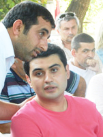


Конечно же нужно активно использовать опыт общения между азербайджанцами и армянами - жителями Грузии. Например, провести встречу с участием жителей Ходжорни, вы наверно знаете это село, где азербайджанцы и армяне живут вместе, учатся в одной школе, и наверно у этих людей будет много чего интересного рассказать молодежи, жителям Армении и Азербайджана, о своем опыте взаимоотношений и совместного проживания.
Если вы помните, на границе Грузии, в Садахло, был раньше рынок, где вместе торговали грузины, азербайджанцы и армяне. Это показало, что при наличии общего интереса, конфликты и разногласия переходят на последнее место. И в этом случае возможно в будущем, в перспективе, использовать Текали для приграничных экономических отношений, что в свою очередь повлияет на создание взаимоотношений между людьми. Все эти ресурсы - опыт общения армян и азербайджанцев в Грузии, экономические взаимоотношения – могут стать хорошим ресурсом для достижения мира.
Конечно мы как сторона, как азербайджанцы Грузии, озабочены конфликтом и очень часто обсуждаем эту тему, хотим видеть, понять, как может решиться проблема Карабаха. Нужно понять, как видят решение этой проблемы азербайджанцы в Азербайджане, в Грузии, и в мире, и также армяне в Армении, в Грузии и в мире. И Текалинский процесс - хороший шанс, что бы все сели за стол и сказали свое мнение, как они видят решение данной проблемы. Нужно уже перейти на уровень, когда мы открыто будем говорить друг другу, в чем заключается решение проблемы, готовы ли мы на какие-то жертвы, готовы ли мы изменить что-то и как мы будем это делать. Серьезных разговоров о решении конфликта между азербайджанцами и армянами – жителями Грузии не бывало и интересно как они на самом деле воспринимают этот конфликт.
И напоследок хочу добавить, что с каждой встречей мы должны начать более серьезно и открыто говорить о том, в чем мы реально видим решение проблем и как максимально можно использовать ресурсы Текали.
Если вы помните, на границе Грузии, в Садахло, был раньше рынок, где вместе торговали грузины, азербайджанцы и армяне. Это показало, что при наличии общего интереса, конфликты и разногласия переходят на последнее место. И в этом случае возможно в будущем, в перспективе, использовать Текали для приграничных экономических отношений, что в свою очередь повлияет на создание взаимоотношений между людьми. Все эти ресурсы - опыт общения армян и азербайджанцев в Грузии, экономические взаимоотношения – могут стать хорошим ресурсом для достижения мира.
Конечно мы как сторона, как азербайджанцы Грузии, озабочены конфликтом и очень часто обсуждаем эту тему, хотим видеть, понять, как может решиться проблема Карабаха. Нужно понять, как видят решение этой проблемы азербайджанцы в Азербайджане, в Грузии, и в мире, и также армяне в Армении, в Грузии и в мире. И Текалинский процесс - хороший шанс, что бы все сели за стол и сказали свое мнение, как они видят решение данной проблемы. Нужно уже перейти на уровень, когда мы открыто будем говорить друг другу, в чем заключается решение проблемы, готовы ли мы на какие-то жертвы, готовы ли мы изменить что-то и как мы будем это делать. Серьезных разговоров о решении конфликта между азербайджанцами и армянами – жителями Грузии не бывало и интересно как они на самом деле воспринимают этот конфликт.
И напоследок хочу добавить, что с каждой встречей мы должны начать более серьезно и открыто говорить о том, в чем мы реально видим решение проблем и как максимально можно использовать ресурсы Текали.
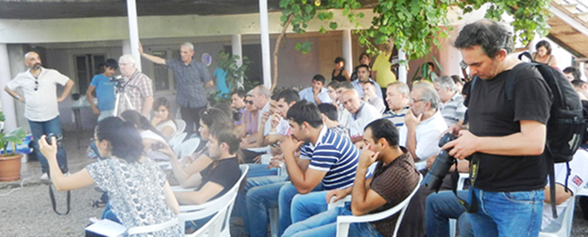

Магеррам Гойушоглу
Магеррам Гойушоглу, Казах, Азербайджан: Дорогие друзья, я первую очередь хочу вас всех поприветствовать. Уважаемый Заур, представители Азербайджана, Армении и Грузии, я хотел бы подчеркнуть некоторые моменты.
До конфликта, который продолжается 24 года, у нас были дружеские отношения, были братские отношения. Я вспоминаю детские годы, у меня был друг, который жил в Севане и мы часто посещали этот город. Но несмотря на все это прошлое, на сегодняшний день разрешение этого конфликта я вижу только в большой абстракции. У каждой стороны есть недоверие. И недоверие есть не только между политическими деятелями, но и между народами. Это создает тяжелое психологическое состояние в регионе. И естественно трудно найти механизм урегулирования отношений.
Я думаю, что мы должны сконцентрировать свое внимание на том, какое влияние могут оказать местные приграничные общины. Я думаю, связи между армянскими и азербайджанскими общинами должны быть налажены при участии общин грузинского приграничья. Я думаю, что с обеих сторон, с обоих государств, военные силы не должны нарушать режим прекращения огня.
Карабахская война совпадает с моими юношескими годами. Я вспоминаю, что в то время по телевидению звучал призыв ООН прекратить огонь на границах. Может быть, чтобы вернуть эту практику мы должны как-то действовать. Если какой-то землевладелец, работая на своем участке подвергается нападениям, то это ни в коем случае не правильно. Для того, чтобы возникло доверие, нужно прийти к общему мнению. Я думаю, что мы здесь собираемся не для того, чтобы просто встречаться, а прийти к какому-то общему мнению, общему решению. Спасибо за внимание.
До конфликта, который продолжается 24 года, у нас были дружеские отношения, были братские отношения. Я вспоминаю детские годы, у меня был друг, который жил в Севане и мы часто посещали этот город. Но несмотря на все это прошлое, на сегодняшний день разрешение этого конфликта я вижу только в большой абстракции. У каждой стороны есть недоверие. И недоверие есть не только между политическими деятелями, но и между народами. Это создает тяжелое психологическое состояние в регионе. И естественно трудно найти механизм урегулирования отношений.
Я думаю, что мы должны сконцентрировать свое внимание на том, какое влияние могут оказать местные приграничные общины. Я думаю, связи между армянскими и азербайджанскими общинами должны быть налажены при участии общин грузинского приграничья. Я думаю, что с обеих сторон, с обоих государств, военные силы не должны нарушать режим прекращения огня.
Карабахская война совпадает с моими юношескими годами. Я вспоминаю, что в то время по телевидению звучал призыв ООН прекратить огонь на границах. Может быть, чтобы вернуть эту практику мы должны как-то действовать. Если какой-то землевладелец, работая на своем участке подвергается нападениям, то это ни в коем случае не правильно. Для того, чтобы возникло доверие, нужно прийти к общему мнению. Я думаю, что мы здесь собираемся не для того, чтобы просто встречаться, а прийти к какому-то общему мнению, общему решению. Спасибо за внимание.
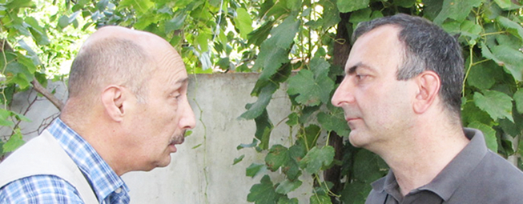

Воскан Саргсян
Воскан Саргсян, Ноемберян, Армения: Уже более 20 лет рассветы и закаты в армяно-азербайджанском приграничье нельзя назвать мирными. Здесь царит ситуация ни войны, ни мира. От периодических нарушений режима прекращения огня страдают не только военнослужащие по обе стороны границы, но и мирные жители: земледельцы, пастухи, просто люди, живущие в приграничных селах.
Армяно-азербайджанский конфликт, который длится более 20 лет оставил глубокий след в жизни двух народов, были большие человеческие, материальные потери. Возникли определенные психологические барьеры между представителями двух народов. Но любая война, насколько бы она ни была долгой и кровопролитной, заканчивается за столом примирения, враждующие народы начинают общаться, сотрудничать в различных сферах.
Армяно-азербайджанские переговоры до сих пор велись на государственном уровне, притом при участием стран-посредников, международных организаций. Эти переговоры до сих пор не привели к ощутимым результатам. Их главным положительным результатом было то, что между сторонами не начались полномасштабные военные действия. По моему личному мнению, эти переговоры были бы более эффективными, если бы проходили без посредников. Ведь в каждом процессе у посредника есть своя выгода, свой интерес, который может не совпадать с интересами сторон, вовлеченных в конфликт, не совпадать с делом установления прочного и долгосрочного мира между сторонами. Также и геополитические интересы стран-сопредседателей Минской группы ОБСЕ – России, США и Франции – которая занимается урегулированием карабахской проблемы, могут не совпадать с интересами Армении и Азербайджана и с принципами мирного и скорейшего урегулирования конфликта. Текалинским процессом началось вовлечение граждан в армяно-азербайджанский диалог, посредством которого может быть достигнуто примирение между двумя народами. Жители приграничья лучше знают цену мира, поскольку живут у линии соприкосновения, в опасной зоне. Правильно также и то, что в течение последних лет, жители приграничья потеряли своих родных, друзей, соседей и у некоторых их них есть отрицательное отношение к народу по ту сторону границы, есть психологические проблемы. Но по моему мнению, среди жителей приграничья стремление к миру преобладает. В конце концов, люди осознают, что войны рождают новые войны, легко начать войну, но очень трудно ее закончить.
Армяно-азербайджанский конфликт, который длится более 20 лет оставил глубокий след в жизни двух народов, были большие человеческие, материальные потери. Возникли определенные психологические барьеры между представителями двух народов. Но любая война, насколько бы она ни была долгой и кровопролитной, заканчивается за столом примирения, враждующие народы начинают общаться, сотрудничать в различных сферах.
Армяно-азербайджанские переговоры до сих пор велись на государственном уровне, притом при участием стран-посредников, международных организаций. Эти переговоры до сих пор не привели к ощутимым результатам. Их главным положительным результатом было то, что между сторонами не начались полномасштабные военные действия. По моему личному мнению, эти переговоры были бы более эффективными, если бы проходили без посредников. Ведь в каждом процессе у посредника есть своя выгода, свой интерес, который может не совпадать с интересами сторон, вовлеченных в конфликт, не совпадать с делом установления прочного и долгосрочного мира между сторонами. Также и геополитические интересы стран-сопредседателей Минской группы ОБСЕ – России, США и Франции – которая занимается урегулированием карабахской проблемы, могут не совпадать с интересами Армении и Азербайджана и с принципами мирного и скорейшего урегулирования конфликта. Текалинским процессом началось вовлечение граждан в армяно-азербайджанский диалог, посредством которого может быть достигнуто примирение между двумя народами. Жители приграничья лучше знают цену мира, поскольку живут у линии соприкосновения, в опасной зоне. Правильно также и то, что в течение последних лет, жители приграничья потеряли своих родных, друзей, соседей и у некоторых их них есть отрицательное отношение к народу по ту сторону границы, есть психологические проблемы. Но по моему мнению, среди жителей приграничья стремление к миру преобладает. В конце концов, люди осознают, что войны рождают новые войны, легко начать войну, но очень трудно ее закончить.
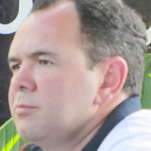
 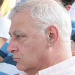
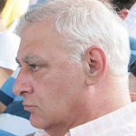

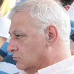
У Текалинского процесса есть пока маленькие, но положительные результаты. Наша сегодняшняя встреча, гражданское слушание – одно из ярких тому свидетельств. Важно, что на этой встрече присутствуют представители приграничных общин. Их возможности можно использовать в создании механизмов безопасности гражданского населения приграничья.
Председатель Кавказского центра миротворческих инициатив, Георгий Ванян уже предложил создать группу быстрого реагирования на нарушения прав жителей приграничных регионов. По моему, в эту группу должны войти жители приграничья из Армении и Азербайджана, желательно – руководители сельских общин. В группе должны быть также представители грузинского общества. Группа с определенной периодичностью будет проводить встречи в Текали, который стал особенным символом взаимодействия между народами. Думаю, эти встречи будут как очередными, по обговоренному графику, один раз в месяц, например, так и внеочередными, когда, например, не дай бог, в приграничных населенных пунктах нарушения режима прекращения огня приведут к жертвам или ранениям мирного населения, и будет необходимо обсуждение и реагирование по конкретному случаю. Во время встреч будут представлены случаи нарушения режима прекращения огня. Грузинские члены группы для подтверждения достоверности этой информации, смогут побывать в приграничных селах, и побеседовать с людьми, задокументировать нанесенный материальный ущерб, и не дай бог, наличие раненных и погибших.
Группа объективно не может и не должна приобщаться к регистрации перестрелок и их последствий, в случае, если они произошли между боевыми постами, по этим случаям обсуждений не может быть. Очевидно, что в настоящее время военное руководство двух стран, службы национальной безопасности не разрешат гражданским лицам вторгаться в эту сферу. Деятельность группы быстрого реагирования будет относиться только к мирным жителям, которые подверглись нападению противника в месте своего жительства, например во время выпаса скота, сельскохозяйственных работ.
При этом группа быстрого реагирования, действующая на линии армяно-азербайджанского соприкосновения, с определенной периодичностью должна публиковать результаты своей работы, статистику нападений на мирных жителей и строения, находящиеся в гражданском употреблении. Это может происходить на пресс-конференциях, которые будут организованы в Текали, путем публикации совместных брошюр, распространением информации в интернет, и другими способами. Таким образом, будет распространяться проверенная, достоверная и важная информация, и общественность Южного Кавказа, также и все интересующиеся процессом урегулирования, узнают вооруженные силы какой из - из сторон осуществили больше нападений на мирных жителей и населенные пункты. Будет создано общественное мнение, которое в какой-то степени сможет иметь сдерживающее значение для предотвращения таких нападений. В военном отношении нападения на мирных жителей и населенные пункты не приводят ни к какому результату, кроме горя для людей и затруднения для их полноценной жизни, создания психологических проблем. В конечном счете этим сеется и углубляется вражда между народами, которые жили бок о бок веками.
Председатель Кавказского центра миротворческих инициатив, Георгий Ванян уже предложил создать группу быстрого реагирования на нарушения прав жителей приграничных регионов. По моему, в эту группу должны войти жители приграничья из Армении и Азербайджана, желательно – руководители сельских общин. В группе должны быть также представители грузинского общества. Группа с определенной периодичностью будет проводить встречи в Текали, который стал особенным символом взаимодействия между народами. Думаю, эти встречи будут как очередными, по обговоренному графику, один раз в месяц, например, так и внеочередными, когда, например, не дай бог, в приграничных населенных пунктах нарушения режима прекращения огня приведут к жертвам или ранениям мирного населения, и будет необходимо обсуждение и реагирование по конкретному случаю. Во время встреч будут представлены случаи нарушения режима прекращения огня. Грузинские члены группы для подтверждения достоверности этой информации, смогут побывать в приграничных селах, и побеседовать с людьми, задокументировать нанесенный материальный ущерб, и не дай бог, наличие раненных и погибших.
Группа объективно не может и не должна приобщаться к регистрации перестрелок и их последствий, в случае, если они произошли между боевыми постами, по этим случаям обсуждений не может быть. Очевидно, что в настоящее время военное руководство двух стран, службы национальной безопасности не разрешат гражданским лицам вторгаться в эту сферу. Деятельность группы быстрого реагирования будет относиться только к мирным жителям, которые подверглись нападению противника в месте своего жительства, например во время выпаса скота, сельскохозяйственных работ.
При этом группа быстрого реагирования, действующая на линии армяно-азербайджанского соприкосновения, с определенной периодичностью должна публиковать результаты своей работы, статистику нападений на мирных жителей и строения, находящиеся в гражданском употреблении. Это может происходить на пресс-конференциях, которые будут организованы в Текали, путем публикации совместных брошюр, распространением информации в интернет, и другими способами. Таким образом, будет распространяться проверенная, достоверная и важная информация, и общественность Южного Кавказа, также и все интересующиеся процессом урегулирования, узнают вооруженные силы какой из - из сторон осуществили больше нападений на мирных жителей и населенные пункты. Будет создано общественное мнение, которое в какой-то степени сможет иметь сдерживающее значение для предотвращения таких нападений. В военном отношении нападения на мирных жителей и населенные пункты не приводят ни к какому результату, кроме горя для людей и затруднения для их полноценной жизни, создания психологических проблем. В конечном счете этим сеется и углубляется вражда между народами, которые жили бок о бок веками.


Потенциал Текалинского процесса можно использовать также для установления сотрудничества между приграничными общинами. Помню, в начале 90-х, в свое время писал об этом в прессе, когда в Нагорном Карабахе шли кровопролитные бои, между селом Довег Ноемберянского района и селом Кямарли Казахского района было такое взаимодействие. Согласно предварительной договоренности, азербайджанцы из Кямарли приехали в Довег на комбайне, скосили пшеницу и развезли ее по домам армян, которые оплатили их работу дровами из своих лесов. Как помню, после моего сообщения BBC заинтересовалось этой интересной историей.
Сейчас, летом, приграничные пшеничные поля, часто становятся мишенью для обстрелов, поля сжигаются, урожай пропадает. Были случаи, когда погибали или получали ранения комбайнеры, шофера, перевозившие урожай. В рамках деятельности правозащитной Текалинской группы быстрого реагирования может быть достигнута договоренность между руководителями сельских общин, чтобы они по возможности способствовали перемирию во время сбора урожая. Правда, не руководители общин, а вооруженные силы нарушают режим прекращения огня. Но думаю, что военное руководство обеих сторон, будучи осведомлено о договоренности между руководством общин, придаст более важное значение сохранению режима прекращения огня, и военные не будут открывать огонь по сельским жителям, собирающим урожай по ту сторону границы.
Сотрудничество между граничащими друг с другом сельскими общинами может быть эффективным также в вопросе использования водных ресурсов. Может быть достигнута договоренность, чтобы не чинились препятствия для обоюдного использования естественных и искусственных оросительных протоков.
Я понимаю, осознаю, что сотрудничеству между людьми, живущими в приграничных общинах Армении и Азербайджана, многое может помешать, но сознаю также, что это правильный путь, который ведет к миру. Всегда трудно идти первым по непроторенной дорожке, потому что на пути может быть много опасностей и трудностей. Но как говорят китайцы, самая трудная дорогая всегда начинается с первого шага. Уже сделаны первые шаги для установления диалога и сотрудничества между приграничными общинами Армении и Азербайджана. Остается продолжить этот путь, перейти к конкретному и практическому взаимодействию, определив формат этого взаимодействия, его механизм, и тех людей, которые должны быть вовлечены в этот процесс. Это можно сделать во время рабочих встреч и обсуждений в Текали.
Сотрудничество между граничащими друг с другом сельскими общинами может быть эффективным также в вопросе использования водных ресурсов. Может быть достигнута договоренность, чтобы не чинились препятствия для обоюдного использования естественных и искусственных оросительных протоков.
Я понимаю, осознаю, что сотрудничеству между людьми, живущими в приграничных общинах Армении и Азербайджана, многое может помешать, но сознаю также, что это правильный путь, который ведет к миру. Всегда трудно идти первым по непроторенной дорожке, потому что на пути может быть много опасностей и трудностей. Но как говорят китайцы, самая трудная дорогая всегда начинается с первого шага. Уже сделаны первые шаги для установления диалога и сотрудничества между приграничными общинами Армении и Азербайджана. Остается продолжить этот путь, перейти к конкретному и практическому взаимодействию, определив формат этого взаимодействия, его механизм, и тех людей, которые должны быть вовлечены в этот процесс. Это можно сделать во время рабочих встреч и обсуждений в Текали.


Сабина Талыбова
Сабина Талыбова, Марнеули, Грузия: Очень важно, чтобы мы понимали, что такое ресурсы третьей стороны. И как сказал Заур, накануне мы долго обсуждали этот вопрос. Конечно у нас есть ресурсы, это человеческие ресурсы, взаимоотношения, возможные экономические отношения. Но мы должны очень четко определить как, каким образом, эти ресурсы можно использовать. Использование ресурсов на словах не произойдет. И у меня вот в контексте доклада Заура, есть такое предложение, нужно проводить более практические встречи, то есть не обсуждения, которые будут поверхностно рассказывать нам о том, какие у нас были отношения до конфликта, какие у нас были отношения на третьей стороне во время конфликта, мы должны говорить о том, что мы можем делать сегодня для того, чтобы исчерпать конфликт. И говорить уже нужно о конкретных вещах. Конечно, это будет болезненно, кого-то из нас воспримут не здраво, кто-то радикально подойдет к этому вопросу, но начинать уже нужно.
Заур предложил хорошую вещь, что нужно обязательно привлечь молодежь, которая непосредственно затронута конфликтом. И конечно же, я как азербайджанка, будь я даже гражданка третьей страны, гражданка Грузии, фактически лично меня конфликт не коснулся, но у меня тоже есть моя этническая позиция. Поэтому для того, чтобы сдвинуться с мертвой точки, обязательно надо проводить практические работы. И если мы дальше будем продолжать встречаться и рассказывать о наших отношениях в прошлом, и сегодняшних, только говорить об отношениях – то мы еще будем долго так встречаться.
Нужно обязательно решить, что для азербайджанца, из Азербайджана или из третьей стороны, в нашем случае это Грузия, что для армянина из Армении, и армянина третьей стороны, армянина из Грузии, что означает урегулирование конфликта, чем мы готовы сегодня пожертвовать, чтобы к чему-то, определенному, полезному, нужному для обеих сторон, прийти. Спасибо за внимание.
Заур предложил хорошую вещь, что нужно обязательно привлечь молодежь, которая непосредственно затронута конфликтом. И конечно же, я как азербайджанка, будь я даже гражданка третьей страны, гражданка Грузии, фактически лично меня конфликт не коснулся, но у меня тоже есть моя этническая позиция. Поэтому для того, чтобы сдвинуться с мертвой точки, обязательно надо проводить практические работы. И если мы дальше будем продолжать встречаться и рассказывать о наших отношениях в прошлом, и сегодняшних, только говорить об отношениях – то мы еще будем долго так встречаться.
Нужно обязательно решить, что для азербайджанца, из Азербайджана или из третьей стороны, в нашем случае это Грузия, что для армянина из Армении, и армянина третьей стороны, армянина из Грузии, что означает урегулирование конфликта, чем мы готовы сегодня пожертвовать, чтобы к чему-то, определенному, полезному, нужному для обеих сторон, прийти. Спасибо за внимание.

2. ГРАЖДАНСКИЕ МЕХАНИЗМЫ ВОЗДЕЙСТВИЯ ДЛЯ ИЗМЕНЕНИЯ СИТУАЦИИ НА ЛИНИИ СОПРИКОСНОВЕНИЯ
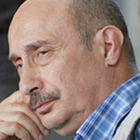
Зардушт Ализаде
Зардушт Ализаде, Баку, Азербайджан: Уважаемые дамы и господа, если мы будем рассматривать войну снайперов без представления общей картины, мы не поймем ничего. Каждая воинская часть, которая находится на линии фронта, имеет по штатному расписанию одного снайпера. И он не имеет права стрелять ни в кого, пока не получит приказ. Это не спорадическая перестрелка, это не стихийный процесс. Это военный приказ, все пули на учете, и снайпер стреляет только по указанию военного руководства. Почему руководство хочет, чтобы на линии фронта погибали люди, и гражданские, и военные? Чтобы создать впечатление, что процесс находится под контролем, что наша сторона, азербайджанская сторона, продолжает бороться за то, чтоб вернули Карабах. Тот же самый процесс и в Армении. Когда там дают приказ стрелять, они говорят своему народу: мы не в стороне стоим, мы отвечаем как надо. Но в конечном счете, результата нет, есть только потери среди личного состава, погибают солдаты, офицеры, погибают иногда дети, иногда крестьяне, пастухи.
Задача сегодняшних обсуждений: что можно сделать для того, чтобы положить этому конец? Я думаю, что мы не сможем сделать ничего, если будем зацикливаться на конкретном вот этом вопросе – перестрелке снайперов, и cможем что-то сделать, если мы будем предлагать общие решения. Это моя точка зрения. В Азербайджане есть организация офицеров запаса, которые создали портал milaz.az, и они с 2008 года ведут наблюдение, мониторинг потерь среди личного состава Азербайджана. За эти 4 с половиной года, поименно, поадресно, с именами – фамилиями-отчествами и т.д, азербайджанская сторона потеряла около 500 человек, солдат и офицеров. Если брать с момента соглашения о прекращении огня 12 мая 1994 года, я думаю, что потери подойдут где-то к четырем тысячам. Были периоды всплеска перестрелок и спада перестрелок. Но это значительные потери. Это уже можно сопоставить с периодом активных боевых действий, когда с азербайджанской стороны были потери 14 тысяч, с армянской стороны – были потери 6 тыс., и тысячи человек были ранены.
Задача сегодняшних обсуждений: что можно сделать для того, чтобы положить этому конец? Я думаю, что мы не сможем сделать ничего, если будем зацикливаться на конкретном вот этом вопросе – перестрелке снайперов, и cможем что-то сделать, если мы будем предлагать общие решения. Это моя точка зрения. В Азербайджане есть организация офицеров запаса, которые создали портал milaz.az, и они с 2008 года ведут наблюдение, мониторинг потерь среди личного состава Азербайджана. За эти 4 с половиной года, поименно, поадресно, с именами – фамилиями-отчествами и т.д, азербайджанская сторона потеряла около 500 человек, солдат и офицеров. Если брать с момента соглашения о прекращении огня 12 мая 1994 года, я думаю, что потери подойдут где-то к четырем тысячам. Были периоды всплеска перестрелок и спада перестрелок. Но это значительные потери. Это уже можно сопоставить с периодом активных боевых действий, когда с азербайджанской стороны были потери 14 тысяч, с армянской стороны – были потери 6 тыс., и тысячи человек были ранены.
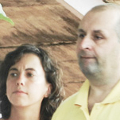
 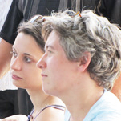
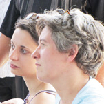

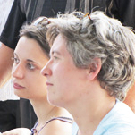
Когда можно этому положить конец? Я думаю что, как правильно отметил армянский коллега, никому не позволят вмешиваться в дела военных. Если снайперы, солдаты стреляют по приказу командования, то кто дает приказ командованию? Командованию дает приказ политическое руководство. Политическое руководство когда дает приказ? Тогда, когда предположим, регион посещает Хилари Клинтон. Тогда дается приказ – эти стреляют, те стреляют и создается некое впечатление, некое ощущение. Для меня, как политолога, это было такое ощущение... я так понял из этих последних перестрелок между нашими сторонами, что госпоже Клинтон дали понять, кто хозяин, что: ты не совайся сюда, Кавказ - наш. А приказ этот был дан из Москвы. Я думаю, что одинаковые приказы спускаются и армянской, и азербайджанской стороне. И они с одинаковым прилежанием выполняют эти указания. Кроме того, есть еще какие-то причины, почему мы азербайджанцы, и мы армяне заинтересованы в том, чтобы были вот эти всплески перестрелок. Политическая активность, выборы, когда подходит время выборов президента, в парламент, и тд. Там на кону миллиарды долларов... тогда надо народ запугать, вот мы стоим на защите нашего Карабаха, азербайджанцы и армяне стоят на защите своего Карабаха, и дается приказ, начинается стрельба, народ пугается, и вот... продолжаем борьбу за Карабах.
Пока не будет мирных переговоров, пока на столе не будут конкретные решения, которые учитывают законные права и азербайджанской стороны, и армянской стороны, право граждан и твердые гарантии безопасности армян Карабаха, азербайджанцев Карабаха, армян и азербайджанцев вообще, пока этого не будет, мы будем вести только общие разговоры о том, что мы будем стараться защищать наши права. Но если ничего конкретного не будет, не будет модели совместной жизни, вот эти перестрелки на линии фронта будут продолжаться. Это очень тяжелая и печальная закономерность. И гражданское общество, к сожалению, очень мало сумело сделать. Я думаю, что Георгий Ванян очень важное дело начал. Мы привлекаем внимание к очень болезненной проблеме, к смерти молодых людей. Мы ее не можем решить, но привлекаем внимание, даем месидж, послание своему обществу, что нельзя быть столь равнодушными к смерти людей.
Пока не будет мирных переговоров, пока на столе не будут конкретные решения, которые учитывают законные права и азербайджанской стороны, и армянской стороны, право граждан и твердые гарантии безопасности армян Карабаха, азербайджанцев Карабаха, армян и азербайджанцев вообще, пока этого не будет, мы будем вести только общие разговоры о том, что мы будем стараться защищать наши права. Но если ничего конкретного не будет, не будет модели совместной жизни, вот эти перестрелки на линии фронта будут продолжаться. Это очень тяжелая и печальная закономерность. И гражданское общество, к сожалению, очень мало сумело сделать. Я думаю, что Георгий Ванян очень важное дело начал. Мы привлекаем внимание к очень болезненной проблеме, к смерти молодых людей. Мы ее не можем решить, но привлекаем внимание, даем месидж, послание своему обществу, что нельзя быть столь равнодушными к смерти людей.

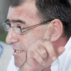
Георгий Ванян
Георгий Ванян, Ереван, Армения: Дорогие участники Текалинского процесса, для того, чтобы подойти к теме, я обязан рассказать вам, с чего все началось. Семь лет назад, в 2005 году, за счет средств, которые мы собрали у граждан Армении, в Ереван были приглашены азербайджанцы и грузины, для обсуждения одного очень простого вопроса: возможна ли южнокавказская интеграция? Так, постановкой этого вопроса, началась гражданская инициатива «Южнокавказская интеграция: Альтернативный старт». Был сайт, были встречи, уже в шестистороннем формате – к инициативе присоединились люди из Абхазии, Южной Осетии, Нагорного Карабаха. Мы делали проекты, выставки и мастер- классы, и в каждом проекте пробовали воплотить альтернативу тому, что уже делалось и делается в неправительственной сфере. Искали путь перехода от ресторанно-туристического миротворчества - к реальному диалогу.
Пока мы искали этот путь, наступил август 2008 года, наступила война, российская интервенция на Южном Кавказе. И в этой войне были действующие лица - граждане, военные, журналисты, дипломаты. Но в этой войне не было правозащитников, в этой войне не было НПО-шников, или, как говорят, гражданского общества. Эта большая армия, состоящая из вовлеченных в миротворческие и региональные проекты людей, капитулировала перед первым же выстрелом.
За 20 лет на Южном Кавказе не удалось создать МЕХАНИЗМ, с помощью которого правозащитники и миротворцы Южного Кавказа, могли бы действовать, стать ДЕЙСТВУЮЩИМ лицом в ситуации, когда это ДЕЙСТВИЕ было жизненно необходимым.
Август 2008-го стал точкой самороспуска гражданской инициативы «Южнокавказская интеграция: Альтернативный старт». Стало ясно, что единственное, что мы можем сделать это признать, что после августа 2008 года, Абхазия, Южная Осетия и Нагорный Карабах окончательно перешли в зону российской оккупации. Три из шести географических точек нашей гражданской инициативы закрылись, перешли на полный казарменный режим. Шестисторонний формат разрушился.
И в этом расформированном, разрушенном формате, мы провели последнюю встречу, в 2009 году, в Ереване. Каждый выступивший на этой встрече, фактически говорил об одном и том же - мы в тупике. Так прошли первые два дня. На третий день мы стали готовится к итоговой пресс-конференции. Стали готовится объявить о том, что мы проиграли, что мы проиграли мир. Это было бы объявлением о прекращении нашей деятельности. Мы сидели, и говорили с утра до поздней ночи. Где-то в 4 часа утра, после долгого и неудачного обсуждения текста протокола, буквально за несколько минут, мы согласовали следующее: никакого протокола не будет, мы сделаем последнюю альтернативную акцию. И утром, на пресс-конференции, Тимур Цховребов зачитал короткий текст, Обращение граждан Южного Кавказа: «Просим правительства и парламенты стран Южного Кавказа, на стыке их границ, выделить по одному квадратному километру, и под патронажем ООН, ОБСЕ - создать там Гражданскую Республику Южного Кавказа. Туда смогут приезжать все люди со всего Южного Кавказа и обсуждать насущные проблемы.»
В тот день, 14 апреля 2009 года, мы просто сделали акцию, последнюю акцию в шестистороннем формате. Тогда армянская пресса констатировала наше поражение, окрестила нас утопистами Южного Кавказа, и по-доброму обсуждала, изначальную несерьезность «Альтернативного старта».
Но тут они ошиблись. Мы нашли путь выхода из тупика - вместе с Малхазом Чемия - когда поехали искать точку пересечения наших границ и нашли ее здесь - в Текали.
Пока мы искали этот путь, наступил август 2008 года, наступила война, российская интервенция на Южном Кавказе. И в этой войне были действующие лица - граждане, военные, журналисты, дипломаты. Но в этой войне не было правозащитников, в этой войне не было НПО-шников, или, как говорят, гражданского общества. Эта большая армия, состоящая из вовлеченных в миротворческие и региональные проекты людей, капитулировала перед первым же выстрелом.
За 20 лет на Южном Кавказе не удалось создать МЕХАНИЗМ, с помощью которого правозащитники и миротворцы Южного Кавказа, могли бы действовать, стать ДЕЙСТВУЮЩИМ лицом в ситуации, когда это ДЕЙСТВИЕ было жизненно необходимым.
Август 2008-го стал точкой самороспуска гражданской инициативы «Южнокавказская интеграция: Альтернативный старт». Стало ясно, что единственное, что мы можем сделать это признать, что после августа 2008 года, Абхазия, Южная Осетия и Нагорный Карабах окончательно перешли в зону российской оккупации. Три из шести географических точек нашей гражданской инициативы закрылись, перешли на полный казарменный режим. Шестисторонний формат разрушился.
И в этом расформированном, разрушенном формате, мы провели последнюю встречу, в 2009 году, в Ереване. Каждый выступивший на этой встрече, фактически говорил об одном и том же - мы в тупике. Так прошли первые два дня. На третий день мы стали готовится к итоговой пресс-конференции. Стали готовится объявить о том, что мы проиграли, что мы проиграли мир. Это было бы объявлением о прекращении нашей деятельности. Мы сидели, и говорили с утра до поздней ночи. Где-то в 4 часа утра, после долгого и неудачного обсуждения текста протокола, буквально за несколько минут, мы согласовали следующее: никакого протокола не будет, мы сделаем последнюю альтернативную акцию. И утром, на пресс-конференции, Тимур Цховребов зачитал короткий текст, Обращение граждан Южного Кавказа: «Просим правительства и парламенты стран Южного Кавказа, на стыке их границ, выделить по одному квадратному километру, и под патронажем ООН, ОБСЕ - создать там Гражданскую Республику Южного Кавказа. Туда смогут приезжать все люди со всего Южного Кавказа и обсуждать насущные проблемы.»
В тот день, 14 апреля 2009 года, мы просто сделали акцию, последнюю акцию в шестистороннем формате. Тогда армянская пресса констатировала наше поражение, окрестила нас утопистами Южного Кавказа, и по-доброму обсуждала, изначальную несерьезность «Альтернативного старта».
Но тут они ошиблись. Мы нашли путь выхода из тупика - вместе с Малхазом Чемия - когда поехали искать точку пересечения наших границ и нашли ее здесь - в Текали.

 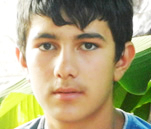
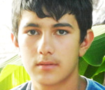

В следующем году здесь прошли два гражданских слушания. В этом году мы встречались в июне и встретились сейчас. Сегодня, 21 июля, здесь, в Текали, мы обсуждаем механизм воздействия на ситуацию на линии армяно-азербайджанского фронта.
На мой взгляд, механизм заключается в переносе проектов в приграничье, любых проектов – семинаров, тренингов, фестивалей, концертов. Перенос проектов, постоянное физическое присутствие – само по себе является воздействием, воздействием через культуру, через образование. Моральным и правозащитным воздействием.
Переносите свои проекты в Текали, и расширяйтесь в сторону Бердавана - в Армению, в сторону Шихлы – в Азербайджан. Давайте осуществим этот гражданский захват приграничных территорий: перенесем свои проекты в деревни, где слышны выстрелы, перенесем свои проекты в деревни, которые более 20 лет не общались со своими соседями, перенесем свои проекты туда, где люди работают на земле, но не могут собрать урожай, потому что появляются «сезонные» снайперы.
Давайте обеспечим свое присутствие на линии фронта. Только в этом случае можно говорить о реальном мониторинге. Только в случае, постоянного присутствия, мы сможем реагировать на ситуацию.
И второй механизм – приоритет свободы. Приоритет новых идей и новых людей. Это - открытый формат, обеспечение возможности участия для каждого.
Мы не имеем права приносить с собой в Текали бюрократизм, меркантильность, канцелярщину. А для этого нужен специальный механизм свободного пространства. Я прошу, всех вас, помочь нам разработать и воплотить этот механизм, в Текали. А теперь извиняюсь, и прошу всех встать. (Все встают.) Посмотрите на стулья, на которых вы сидели. На белые стулья. Эти стулья куплены за счет вклада молодой девушки из Баку. (аплодисменты). Иракли купил эти стулья в Тбилиси, (аплодисменты) Гия привез их на машине (аплодисменты) и передал Салману (аплодисменты). Эти стулья мы поставили во дворе дома Саята Алиева. Низкий поклон хозяевам за гостеприимство. (аплодисменты)
Садитесь, пожалуйста, на свои текалинские стулья. В нескольких сотнях метров от нас, на пересечении границ наших трех стран, лежат мины. Попробуйте представить, ЧТО нужно сделать для того, чтобы разминировать эту территорию и построить на ней Площадь мира. И когда вы сидите и думаете – это и есть Текалинский процесс – это и есть механизм, который очень скоро приведет к воздействию на ситуацию на линии армяно-азербайджанского фронта.
Переносите свои проекты в Текали, и расширяйтесь в сторону Бердавана - в Армению, в сторону Шихлы – в Азербайджан. Давайте осуществим этот гражданский захват приграничных территорий: перенесем свои проекты в деревни, где слышны выстрелы, перенесем свои проекты в деревни, которые более 20 лет не общались со своими соседями, перенесем свои проекты туда, где люди работают на земле, но не могут собрать урожай, потому что появляются «сезонные» снайперы.
Давайте обеспечим свое присутствие на линии фронта. Только в этом случае можно говорить о реальном мониторинге. Только в случае, постоянного присутствия, мы сможем реагировать на ситуацию.
И второй механизм – приоритет свободы. Приоритет новых идей и новых людей. Это - открытый формат, обеспечение возможности участия для каждого.
Мы не имеем права приносить с собой в Текали бюрократизм, меркантильность, канцелярщину. А для этого нужен специальный механизм свободного пространства. Я прошу, всех вас, помочь нам разработать и воплотить этот механизм, в Текали. А теперь извиняюсь, и прошу всех встать. (Все встают.) Посмотрите на стулья, на которых вы сидели. На белые стулья. Эти стулья куплены за счет вклада молодой девушки из Баку. (аплодисменты). Иракли купил эти стулья в Тбилиси, (аплодисменты) Гия привез их на машине (аплодисменты) и передал Салману (аплодисменты). Эти стулья мы поставили во дворе дома Саята Алиева. Низкий поклон хозяевам за гостеприимство. (аплодисменты)
Садитесь, пожалуйста, на свои текалинские стулья. В нескольких сотнях метров от нас, на пересечении границ наших трех стран, лежат мины. Попробуйте представить, ЧТО нужно сделать для того, чтобы разминировать эту территорию и построить на ней Площадь мира. И когда вы сидите и думаете – это и есть Текалинский процесс – это и есть механизм, который очень скоро приведет к воздействию на ситуацию на линии армяно-азербайджанского фронта.
 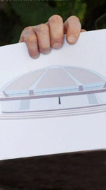
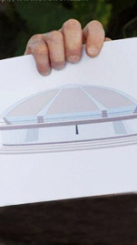
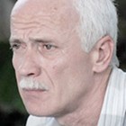
Малхаз Чемия
Малхаз Чемия, Тбилиси, Грузия: Я продолжу в контексте нашей коллеги Сабины, которая поставила актуальный вопрос о конкретных действиях, о конкретных проектах, и насколько знаю, как раз сегодня это и запланировано по расписанию. Но хочу уже внести маленький штрих. Мы находимся в очень гостеприимном доме, но место встречи это одно, а место работы – это другое. Наша организация, наша сеть растет, и одно из направлений по которому мы работаем - это создание в Текали конференц-зала. Это не будет конференц-зал только для нашей ассоциации, это давняя задумка людей, которые стояли у начала этого движения.
Я могу на эскизном уровне показать. Это один из эскизных проектов над которым идет более конкретная работа. (Показывает эскиз) Это здание будет, представляете, на границе, в самой горячей точке на Кавказе, будет символом мира, вот это здание, на фоне сельских домов. И это не Васюки, это реальность. Вот начиная с этих стульев мы дойдем и до этого, будем работать в этом здании над конкретными проектами. (аплодисменты).
Я могу на эскизном уровне показать. Это один из эскизных проектов над которым идет более конкретная работа. (Показывает эскиз) Это здание будет, представляете, на границе, в самой горячей точке на Кавказе, будет символом мира, вот это здание, на фоне сельских домов. И это не Васюки, это реальность. Вот начиная с этих стульев мы дойдем и до этого, будем работать в этом здании над конкретными проектами. (аплодисменты).
 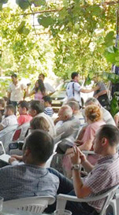
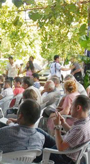
3. NONVIOLENT PEACEFORCE: ОПЫТ РАБОТЫ И ПЛАНЫ НА ЮЖНОМ КАВКАЗЕ
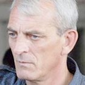
Стив Янг
Стив Янг, Брюссель, Бельгия: Я благодарю организаторов за возможность участия на этом обсуждении. Наша организация на Кавказе недавно. Но случайно совпало, что Бернард О'Салливан из нашего Брюссельского офиса тоже сегодня здесь. Мы не в первый раз в Текали. В прошлый раз, когда мы здесь были, мы заметили, что это уникальный для Южного Кавказа процесс. Поэтому я бы хотел рассказать чуть-чуть о нашей организации, представить ее всем вам.
Nonviolent Peaceforce (NP), как профессиональная группа в сфере зашиты гражданского населения и поддержания мира, способствует диалогу между сторонами в конфликтных зонах, и своим присутствием обеспечивает поддержку гражданского населения. Имея главный офис в Брюсселе, сегодня NP работает на Филлипинах , в Южном Судане, на Южном Кавказе, и в данный период планируется создание офиса в Мианмаре. Наш персонал состоит из людей, которые долго работали в конфликтных регионах, и являются опытными гражданскими миротворцами, и из новичков в этой сфере, у нас сочетаются опыт, умение, способности, надлежащее отношение и основная подготовка NP.
Nonviolent Peaceforce (NP), как профессиональная группа в сфере зашиты гражданского населения и поддержания мира, способствует диалогу между сторонами в конфликтных зонах, и своим присутствием обеспечивает поддержку гражданского населения. Имея главный офис в Брюсселе, сегодня NP работает на Филлипинах , в Южном Судане, на Южном Кавказе, и в данный период планируется создание офиса в Мианмаре. Наш персонал состоит из людей, которые долго работали в конфликтных регионах, и являются опытными гражданскими миротворцами, и из новичков в этой сфере, у нас сочетаются опыт, умение, способности, надлежащее отношение и основная подготовка NP.

Бернард О'Салливан
В каждой конфликтной зоне, где мы работаем и во всем мире мы хотим достичь следующих целей:
- Создание атмосферы, способствующей прочному миру
- Защита граждан, пострадавших в последствие конфликтов
- Развитие, выдвижение и применение принципа «Невооруженной гражданской зашиты мирного населения» и создание условий для применения этого принципа среди уполномоченных лиц и государственных учреждений.
- Создание сети подготовленных профессионалов, способных присоединится к составу гражданских миротворцев с помощью тренингов и практики на региональном уровне.
Наша концепция: Мы представляем себе мир, где широкомасштабно используется невооруженная гражданская защита, с применением апробированных ненасильственных механизмов, как альтернативного подхода для предотвращения, урегулирования и уменьшения насильственных конфликтов. Наша основная стратегия для достижения этой цели, создание благоприятного пространства для диалога. NP сотрудничает со всеми заинтересованными общественными секторами, и гарантирует конфиденциальность и зарождая доверие.
Наша деятельность: В основном, мы принимаем приглашение местных организаций заинтересованных ненасильственными мерами решения конфликтов. Мы встречаемся и сотрудничаем с основными акторами, с лидерами противоположенных сторон, с местными правоохранительными органами, с религиозными лидерами, с бизнес сектором и с лидерами гражданского общества. Мы живем и работаем среди местного населения в зонах конфликта.
Граждане, находящиеся под угрозой насилия обращаются к нам. Они знают и доверяют нам, мы живем среди общин. Будучи беспристрастными и невооруженными, мы обеспечиваем наше наглядное присутствие с помощью униформ и машин со знаком NP . Мы строим почву для доверия и чувства безопасности для граждан, пострадавших во время конфликтов, и обеспечиваем им доступ к структурам и механизмам для решения разных вопросов.
Наша деятельность включает в себя: вход в зоны активного вооруженного конфликта, с разрешения воюющих сторон, для вывода мирного населения и создания безопасного пространства для проведения диалога, посредничество между враждующими сторонами, обеспечение временного безопасного убежища для перемещенных граждан и ведение переговоры для освобождения похищенных людей. В Шри-Ланке, во время перемирия, NP действовала как доверенная беспристрастная, содействующая сторона по вопросам безопасности, также работала с обеими сторонами конфликта и поддерживала местные инициативы для защиты мирного населения.
На сегодняшний день NP является официальным членом «Компонента по защите граждан», которая является частью международной группы мониторинга по прекращению огня между «Фронтом исламистского освобождения» и правительством на Филиппинах.
В Южном Судане мы активно участвуем в процессе защиты граждан в трех отдельных конфликтных регионах. В лагере беженцев, который находятся в близ границы с северным Суданом, в зонах пострадавших от «Божественной армии сопротивления» на юго-западе страны и во время традиционно-племенного конфликта по всей стране.
NP присутствует на Южном Кавказе, в частности в Грузии, с января 2012 года. На сегодняшний день мы осуществляем предварительную программу («Группа Местных Инициатив») в регионе Шида Картли, которая направлена на предоставление возможности общинам, пострадавшим в последствие конфликта, создать механизм, способствующий обеспечить безопасность людей.
NP намеревается создавать подобные структуры, адаптируя на местный контекст, и в других конфликтных регионах Южного Кавказа. Спасибо за внимание.
- Создание атмосферы, способствующей прочному миру
- Защита граждан, пострадавших в последствие конфликтов
- Развитие, выдвижение и применение принципа «Невооруженной гражданской зашиты мирного населения» и создание условий для применения этого принципа среди уполномоченных лиц и государственных учреждений.
- Создание сети подготовленных профессионалов, способных присоединится к составу гражданских миротворцев с помощью тренингов и практики на региональном уровне.
Наша концепция: Мы представляем себе мир, где широкомасштабно используется невооруженная гражданская защита, с применением апробированных ненасильственных механизмов, как альтернативного подхода для предотвращения, урегулирования и уменьшения насильственных конфликтов. Наша основная стратегия для достижения этой цели, создание благоприятного пространства для диалога. NP сотрудничает со всеми заинтересованными общественными секторами, и гарантирует конфиденциальность и зарождая доверие.
Наша деятельность: В основном, мы принимаем приглашение местных организаций заинтересованных ненасильственными мерами решения конфликтов. Мы встречаемся и сотрудничаем с основными акторами, с лидерами противоположенных сторон, с местными правоохранительными органами, с религиозными лидерами, с бизнес сектором и с лидерами гражданского общества. Мы живем и работаем среди местного населения в зонах конфликта.
Граждане, находящиеся под угрозой насилия обращаются к нам. Они знают и доверяют нам, мы живем среди общин. Будучи беспристрастными и невооруженными, мы обеспечиваем наше наглядное присутствие с помощью униформ и машин со знаком NP . Мы строим почву для доверия и чувства безопасности для граждан, пострадавших во время конфликтов, и обеспечиваем им доступ к структурам и механизмам для решения разных вопросов.
Наша деятельность включает в себя: вход в зоны активного вооруженного конфликта, с разрешения воюющих сторон, для вывода мирного населения и создания безопасного пространства для проведения диалога, посредничество между враждующими сторонами, обеспечение временного безопасного убежища для перемещенных граждан и ведение переговоры для освобождения похищенных людей. В Шри-Ланке, во время перемирия, NP действовала как доверенная беспристрастная, содействующая сторона по вопросам безопасности, также работала с обеими сторонами конфликта и поддерживала местные инициативы для защиты мирного населения.
На сегодняшний день NP является официальным членом «Компонента по защите граждан», которая является частью международной группы мониторинга по прекращению огня между «Фронтом исламистского освобождения» и правительством на Филиппинах.
В Южном Судане мы активно участвуем в процессе защиты граждан в трех отдельных конфликтных регионах. В лагере беженцев, который находятся в близ границы с северным Суданом, в зонах пострадавших от «Божественной армии сопротивления» на юго-западе страны и во время традиционно-племенного конфликта по всей стране.
NP присутствует на Южном Кавказе, в частности в Грузии, с января 2012 года. На сегодняшний день мы осуществляем предварительную программу («Группа Местных Инициатив») в регионе Шида Картли, которая направлена на предоставление возможности общинам, пострадавшим в последствие конфликта, создать механизм, способствующий обеспечить безопасность людей.
NP намеревается создавать подобные структуры, адаптируя на местный контекст, и в других конфликтных регионах Южного Кавказа. Спасибо за внимание.
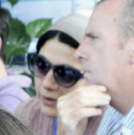
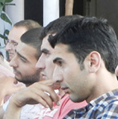
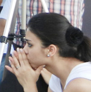
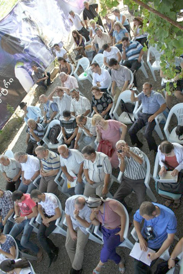
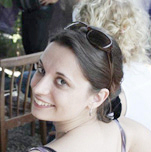
 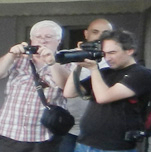
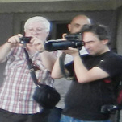
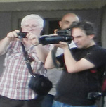
4. СВОБОДНЫЙ МИКРОФОН
Георгий Ванян: Разрешите мне сказать пару слов о свободном микрофоне. Микрофон будет работать в течение всего дня, до тех пор, пока мы в Текали. Хоть он и охватывает маленькое пространство, но и в Армении, и в Грузии, и в Азербайджане я уверен, еще есть журналисты и будут журналисты, которые будут распространять свободное слово. Параллельно с работой свободного микрофона, начнется вторая часть нашей сегодняшней встречи - рабочие обсуждения. Здесь люди из приграничья, люди из столиц – это повод для обсуждения будущих проектов, не всегда Я и Теюб будем все организовывать, это ваше пространство, это ваша площадь, давайте сегодня начинать нашу работу – по два, по пять, по десять, по тридцать человек - как вам удобно – давайте уже начинать работу.
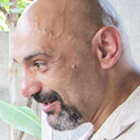
Армен Варданян
Меня зовут Армен Варданян, я режиссер кино и телевидения. Мое отношение к армянскому правительству и к людям, которые правят Арменией я уже высказывал ни один раз. Могу повторить. Я считаю, что преступная группировка узурпировала власть в Армении. Это мое личное мнение. Теперь вернемся к другим вопросам. Вот господин Ванян сказал тут об одной интересной вещи - о культуре. Я считаю, что наше гражданское общество довольно слабое во всех наших трех государствах, именно потому, что мы не боремся тем же оружием, которым против мира борются наши государства. Я имею ввиду Армению в первую очередь, я думаю в Азербайджане ситуация не слишком отличается от нашей. Есть такой один рок-музыкант, его зовут Стинг, многие из вас его конечно знают. И существует мнение, что его песня «Russians» сделала больше, чем все политики вместе взятые, там он поет: «Поверьте, если я вам скажу, что русские любят своих детей также, как и мы.»
Я уверен, что конечно, какие-то, насущные, сегодняшние проблемы надо решать. Какими методами, я честно говоря, не знаю. У меня мало опыта. Группа быстрого реагирования и т.д. для меня это страшные слова, я их боюсь. Но я знаю, что люди смотрят кино, я знаю, что люди читают книги. Я знаю, что есть единственный метод - ломать образ врага, о котором говорил господин Ализаде. Образ врага помогает коррумпированной власти удерживать власть. Что надо делать? Ломать образ врага. Ломать оружием, которым этот образ создается – культурой. Что мы, наша организация, сейчас и будем делать в ближайшие 3-4 дня в Текали. Наша организация осуществляет проект, который называется «Культурный Кавказ». Мы первые части проекта делали в Армении, Турции, Грузии, и нам не хватало на сайте элементов азербайджанской культуры. Именно поэтому мы приехали в Текали, чтобы искать, находить и помещать в одном едином пространстве культуру Кавказа. Мое мнение, что это направление – оно перспективнее, оно смотрит в будущее. Самое главное, в моем представлении, менять людей, а не государства. Государства не изменишь, как они были коррумпированными так и останутся. Надо менять людей, которые будут формировать государства. Все, кто из Текали мы просим помочь. Я передам слово Ашоту Мирзояну, который уже продолжит о проекте.
Я уверен, что конечно, какие-то, насущные, сегодняшние проблемы надо решать. Какими методами, я честно говоря, не знаю. У меня мало опыта. Группа быстрого реагирования и т.д. для меня это страшные слова, я их боюсь. Но я знаю, что люди смотрят кино, я знаю, что люди читают книги. Я знаю, что есть единственный метод - ломать образ врага, о котором говорил господин Ализаде. Образ врага помогает коррумпированной власти удерживать власть. Что надо делать? Ломать образ врага. Ломать оружием, которым этот образ создается – культурой. Что мы, наша организация, сейчас и будем делать в ближайшие 3-4 дня в Текали. Наша организация осуществляет проект, который называется «Культурный Кавказ». Мы первые части проекта делали в Армении, Турции, Грузии, и нам не хватало на сайте элементов азербайджанской культуры. Именно поэтому мы приехали в Текали, чтобы искать, находить и помещать в одном едином пространстве культуру Кавказа. Мое мнение, что это направление – оно перспективнее, оно смотрит в будущее. Самое главное, в моем представлении, менять людей, а не государства. Государства не изменишь, как они были коррумпированными так и останутся. Надо менять людей, которые будут формировать государства. Все, кто из Текали мы просим помочь. Я передам слово Ашоту Мирзояну, который уже продолжит о проекте.

Ашот Мирзоян
Ашот Мирзоян, Гюмри, Армения: Я хочу сказать спасибо организаторам, я хочу сказать спасибо жителям этого села. Мы сегодня здесь, из Армении несколько человек, и из Грузии, но сегодня и завтра, и еще может несколько дней останемся в Текали. Мы будем жить здесь. Сегодня вечером мы хотим сделать презентацию нашего проекта, и я бы очень хотел, чтобы жители этого села знали бы, что мы здесь, и сегодня мы постараемся рассказать вам попозже, о том, что мы хотим сделать. Это все что я хотел сказать. И если кто-нибудь из Азербайджана захотел бы сотрудничать с нами, сегодня как раз тот случай, чтобы мы с ними познакомились. Мы ждем азербайджанских друзей, которые смогли бы с нами сотрудничать. Спасибо.

Рашад Арабов
Я - Рашад Арабов, из Казаха. Приветствую всех присутствующих. Как мы знаем этот конфликт продолжается более 20 лет. Этот конфликт продолжается во всех сферах, также в интернет-порталах, на сайтах, в социальных сетях, он продолжается в форме «холодной войны». Если спросишь любого человека, хотел бы он отдать свою землю соседу, каждый бы спросил, а зачем я должен давать свою землю? Я, как представитель молодого поколения, о котором тут много говорили, не могу сказать, что я за войну, или за мир. Почему я хочу не войны, а мира? Я сторонник мира, потому что не хочу терять свое будущее. А почему я сторонник войны? Потому что так дальше продолжаться не может. Раны по-прежнему остаются незажившими. Почему мы тут собрались? И что будет после нашей каждой встречи?
Я хочу вам пример привести: вот порву я этот лист бумаги на две части, кто их потом может соединить? И эти раны не могут зажить, и все не может быть по старому. Ни Россия, ни Армения, ни Азербайджан не могут восстановить прошлое. И сегодня мы свидетели того, что между Россией и Грузией тоже, раны остаются в памяти, складируются. Я думаю, что если бы даже урегулировался этот конфликт, эти раны залечить невозможно. Сегодня мы должны так вести свою работу, чтобы в будущем, наши дети, наши внуки не имели этого в своей памяти. Почему мы всегда должны прислушиваться к третьей стороне. Мы не можем сами решить эту проблему? Наши два государства. Россия пусть решает свои проблемы, а Азербайджан и Армения – свои. Мы должны решить этот вопрос самостоятельно. И мы, молодежь, должны решить это сами, без посторонней помощи. Я написал Георгию, о том как вообще можно представить наше участие на мониторинге, но до сих пор не получил полноценного ответа. Я думаю, молодежь многое может сделать.
Я хочу вам пример привести: вот порву я этот лист бумаги на две части, кто их потом может соединить? И эти раны не могут зажить, и все не может быть по старому. Ни Россия, ни Армения, ни Азербайджан не могут восстановить прошлое. И сегодня мы свидетели того, что между Россией и Грузией тоже, раны остаются в памяти, складируются. Я думаю, что если бы даже урегулировался этот конфликт, эти раны залечить невозможно. Сегодня мы должны так вести свою работу, чтобы в будущем, наши дети, наши внуки не имели этого в своей памяти. Почему мы всегда должны прислушиваться к третьей стороне. Мы не можем сами решить эту проблему? Наши два государства. Россия пусть решает свои проблемы, а Азербайджан и Армения – свои. Мы должны решить этот вопрос самостоятельно. И мы, молодежь, должны решить это сами, без посторонней помощи. Я написал Георгию, о том как вообще можно представить наше участие на мониторинге, но до сих пор не получил полноценного ответа. Я думаю, молодежь многое может сделать.
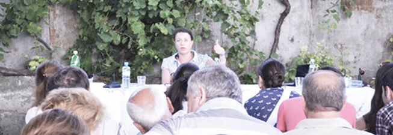

Ирина Ткешелашвили
Добрый день, меня зовут Ирина Ткешелашвили, я из Грузии, студентка докторантуры. Я в первый раз в Текали, спасибо за эту возможность. А до этого участвовала, можно сказать, онлайн, то есть читала о предыдущих ваших встречах, о тех вопросах, которые вы затрагивали до этого. И сегодня хотелось бы прокомментировать те выступления которые были, очень коротко, чтобы не забирать ваше время. Это касается следующих вопросов. Я очень много слышала о том, что было вчера, 20 лет назад, что мы потеряли, и как у нас это болит. Но если честно, я бы хотела услышать конкретные примеры решения, конкретные шаги или программы, которые мы бы хотели реализовать. То есть, то что здесь мы все объединены, в рамках этой встречи, в рамках предыдущих встреч, в рамках тех инициатив, которые вы уже начали, это очень здорово. Уже есть шаги вперед. То есть вы озвучили вопросы касающиеся возможностей. Я слышала очень много «если», очень много «должны», очень много «хотели бы». Я бы хотела бы, чтобы вот то, что мы сидим на этих стульях, и «думаем», как сказал господин Ванян, я бы хотела, чтобы мы перешли к следующему процессу «делаем», «действуем». То есть шаги, которые рассчитаны, планы, которые реальны, планы которые двигают заинтересованные стороны. То есть где, когда, почему и каким образом. Теория это здорово. Но вы уже давно этот этап прошли.
Вот вопросы молодежи я бы хотела озвучить, потому что у нас есть некоторый опыт в этой области. Азербайджан на данный момент является первым государством на Южном Кавказе который реализует программу участия студентов в экономических процессах. Грузия должна была подключиться в 2011 году, надо просто узнать подключились или нет, и каким образом можно подключить молодежь посредством экономических проектов, путем сотрудничества с конкретными бизнес-представителями. Это представители банковских структур, это представители тех бизнесов, которые сегодня уже работают и развиваются, и представители тех молодежных организаций, которые сегодня функционируют и уже реализуют определенные проекты. То есть мне кажется нехватка интеграции и координации молодежных проектов, уже существующих, которые уже сегодня действуют, и уже имеют результаты. Дальше, тут было озвучено о возможных экономических проектах в этом регионе, или в приграничных селах. То есть - возможно да, но каким образом? Кто берет на себя эту ответственность и в рамках какого времени это собирается осуществиться, и какие были бы в этом заинтересованные стороны. То есть теоретически это здорово. А дальше?
И наверно следующий вопрос, который касается взаимозависимости. Мне не нравится слово взаимозависимость. Хотелось бы озвучить взаимное уважение, взаимное понимание, взаимные интересы. Взаимозависимость, это та марионеточная ниточка, которая дергается интересами других в этом регионе, и вы все об этом прекрасно знаете. Вот те конкретные интересы. Исходя из вашего опыта. Есть ли какая-то общая база, где можно об этом прочитать? Есть ли лица, которые в этом задействованы, которые могут делать свои проекты сегодня здесь и сейчас? Мы можем говорить о вчерашнем дне, который уже закончился, мы не можем его изменить, мы можем поменять наше к нему отношение. Это то, чем вы занимаетесь путем построения вот этих встреч. Но я хотела бы услышать о том, что мы сегодня уже делаем, чтобы у нас было что-то завтра. Конкретные шаги. И в конце просто поблагодарить за то, что вы эту инициативу уже начали, уже в этом направлении работаете. И если был бы общий какой-то портал, включение молодежных организаций, которые хотели бы принять участие, уже с конкретными ресурсами. Это не только человеческие ресурсы, которые вы озвучили, но это еще и ресурсы, которые сотрудничают с другими странами и которые имеют конкретные международные проекты, которые заинтересованы, но не полноценно информированы о Ваших инициативах. Остальное наверно будет решаться в групповых работах.
Вот вопросы молодежи я бы хотела озвучить, потому что у нас есть некоторый опыт в этой области. Азербайджан на данный момент является первым государством на Южном Кавказе который реализует программу участия студентов в экономических процессах. Грузия должна была подключиться в 2011 году, надо просто узнать подключились или нет, и каким образом можно подключить молодежь посредством экономических проектов, путем сотрудничества с конкретными бизнес-представителями. Это представители банковских структур, это представители тех бизнесов, которые сегодня уже работают и развиваются, и представители тех молодежных организаций, которые сегодня функционируют и уже реализуют определенные проекты. То есть мне кажется нехватка интеграции и координации молодежных проектов, уже существующих, которые уже сегодня действуют, и уже имеют результаты. Дальше, тут было озвучено о возможных экономических проектах в этом регионе, или в приграничных селах. То есть - возможно да, но каким образом? Кто берет на себя эту ответственность и в рамках какого времени это собирается осуществиться, и какие были бы в этом заинтересованные стороны. То есть теоретически это здорово. А дальше?
И наверно следующий вопрос, который касается взаимозависимости. Мне не нравится слово взаимозависимость. Хотелось бы озвучить взаимное уважение, взаимное понимание, взаимные интересы. Взаимозависимость, это та марионеточная ниточка, которая дергается интересами других в этом регионе, и вы все об этом прекрасно знаете. Вот те конкретные интересы. Исходя из вашего опыта. Есть ли какая-то общая база, где можно об этом прочитать? Есть ли лица, которые в этом задействованы, которые могут делать свои проекты сегодня здесь и сейчас? Мы можем говорить о вчерашнем дне, который уже закончился, мы не можем его изменить, мы можем поменять наше к нему отношение. Это то, чем вы занимаетесь путем построения вот этих встреч. Но я хотела бы услышать о том, что мы сегодня уже делаем, чтобы у нас было что-то завтра. Конкретные шаги. И в конце просто поблагодарить за то, что вы эту инициативу уже начали, уже в этом направлении работаете. И если был бы общий какой-то портал, включение молодежных организаций, которые хотели бы принять участие, уже с конкретными ресурсами. Это не только человеческие ресурсы, которые вы озвучили, но это еще и ресурсы, которые сотрудничают с другими странами и которые имеют конкретные международные проекты, которые заинтересованы, но не полноценно информированы о Ваших инициативах. Остальное наверно будет решаться в групповых работах.
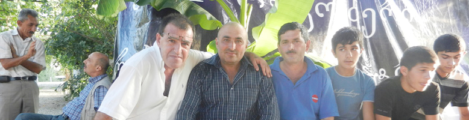

Нугзар Кохреидзе
Добрый день, Я - Нугзар Кохреидзе. В первую очередь, большое спасибо за приглашение в Текали. У меня двойственная задача нахождения здесь. Одну из них партнеры из Гюмри уже озвучили, а вторая, это тот процесс, который проходит здесь, в котором вы все участвуете. Я представляю неправительственную организацию из Кутаиси. Граждане Грузии наверно знают, что это будущий административный центр Грузии, и мы сейчас как бы готовимся к этой роли. Наша организация - «Диалог поколений» - уже многие годы участвует в процессах южно-осетинского, абхазского конфликта. Я, например, являюсь фасилитатором нескольких подобных встреч молодежи Грузии, Абхазии и Южной Осетии, и должен вам сказать, что мой опыт свидетельствует, как сложно проводить подобные встречи и находить общие точки соприкосновения. И конечно везде история играет главную роль, все начинается с прошлого, и мы очень трудным путем приходим к будущему. Но здесь есть и положительный фактор: любой молодой человек всегда смотрит в будущее несмотря на то, что на его плечах лежит очень тяжелое прошлое его отцов и дедов.
Здесь было озвучено, что были и шестисторонние встречи, и я был бы очень рад, если бы подобные встречи продолжились в Текалинском процессе в том числе, потому что нам они очень нужны, и грузинской стороне, в том числе. И я считаю, что это сотрудничество возможно в сфере культуры, экономики, здравоохранения, образования и социальных проблем. Это процессы которые нужны всем, к которым очень чувствительны жители конфликтных регионов, пограничных регионов, или просто жители наших стран. Что сегодня важно для жителей Южного Кавказа? Это разрешение социальных проблем, это разрешение культурных, образовательных проблем. Мы можем объединить наши ресурсы, которые в гражданском обществе уже так или иначе существуют, и дать возможность этим ресурсам помогать друг другу в разрешении проблем.
Вы знаете что, в Грузии существует такой опыт, когда абхазские жители, граждане Абхазии, получают здесь медицинское обслуживание. То есть очень много таких, очень маленьких островков, какого-то уже сосуществования, каких-то уже, можно сказать, отношений. Подобные примеры, они очень важны во всех конфликтах, потому что конфликты сами по себе не возникают, у них есть изначальные точки опоры. Конечно происходит определенная работа, пропаганда, все это есть. Но есть и маленькая, какая-то основа, на которую приходятся эти точечные удары и эти точечные удары потом превращаются в конфликты. Например, когда я изучал молдово-приднестровский конфликт, честно говоря, мы не поняли в чем суть конфликта даже после многократных встреч с жителями и с той и с другой стороны, с экспертами и политиками. Я не знаю... с кем мы только мы не встречались, но поняли только одно – что существует какое-то политическое решение, оно важно для кого-то, и поэтому люди приносятся в жертву каким-то политическим позициям.
Здесь было озвучено, что были и шестисторонние встречи, и я был бы очень рад, если бы подобные встречи продолжились в Текалинском процессе в том числе, потому что нам они очень нужны, и грузинской стороне, в том числе. И я считаю, что это сотрудничество возможно в сфере культуры, экономики, здравоохранения, образования и социальных проблем. Это процессы которые нужны всем, к которым очень чувствительны жители конфликтных регионов, пограничных регионов, или просто жители наших стран. Что сегодня важно для жителей Южного Кавказа? Это разрешение социальных проблем, это разрешение культурных, образовательных проблем. Мы можем объединить наши ресурсы, которые в гражданском обществе уже так или иначе существуют, и дать возможность этим ресурсам помогать друг другу в разрешении проблем.
Вы знаете что, в Грузии существует такой опыт, когда абхазские жители, граждане Абхазии, получают здесь медицинское обслуживание. То есть очень много таких, очень маленьких островков, какого-то уже сосуществования, каких-то уже, можно сказать, отношений. Подобные примеры, они очень важны во всех конфликтах, потому что конфликты сами по себе не возникают, у них есть изначальные точки опоры. Конечно происходит определенная работа, пропаганда, все это есть. Но есть и маленькая, какая-то основа, на которую приходятся эти точечные удары и эти точечные удары потом превращаются в конфликты. Например, когда я изучал молдово-приднестровский конфликт, честно говоря, мы не поняли в чем суть конфликта даже после многократных встреч с жителями и с той и с другой стороны, с экспертами и политиками. Я не знаю... с кем мы только мы не встречались, но поняли только одно – что существует какое-то политическое решение, оно важно для кого-то, и поэтому люди приносятся в жертву каким-то политическим позициям.
 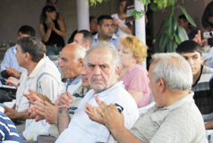
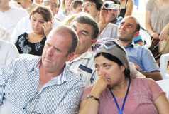
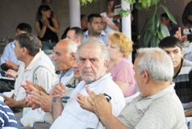
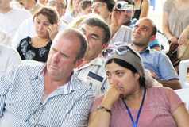
В чем заключается цель текалинского процесса и вообще всего гражданского общества? Господин Ванян очень правильные акценты сделал. Я согласен, что мы, правда, проиграли мир в 2008 году, и это был очень важный промах, который гражданское общество Грузии, в данном случае я говорю только о гражданском обществе Грузии, допустило. Мы не смогли даже создать механизм народной дипломатии. Сегодня мы стараемся переоценить эти процессы, стараемся сделать их по возможности крепкими, чтобы никто уже не смог их разрушить. Что мы кладем в основу нашей деятельности? В первую очередь - Текалинский процесс он один из... он не может быть самым главным. Он один из... Но каждый участник, который участвует, а нас уже много, здесь более 50 человек, как я вижу. Мы, каждый из нас, это носители определенных ресурсов. У нас есть друзья, у нас есть организации с которыми мы общаемся, журналисты, с которыми мы знакомы, которые за свободу слова и печати, и т.д. каждый из нас уже носитель этой главной мысли – миротворчества. Я думаю, то что мы здесь делаем, то что мы здесь обсуждаем, то, к чему мы приходим, обязательно должно распространятся на местах. Ничего не должно оставаться в этих природных стенах. Потому что если все это будет умирать здесь, если мы будем все время только обсуждать, если мы не будем претворять это на личном уровне в жизнь, то никакой процесс дальше Текали не пойдет.
И надо уметь работать с правительством. Очень часто у гражданского общества есть позиция, что власть, с ней говорить невозможно: мы отдельно, они отдельно. Но на самом деле гражданское общество это общее понятие, и в нем входит и правительство тоже. Поэтому нам надо учиться работать с этими же, скажем в кавычках «криминалами». Для того, чтобы они меняли свое решение, для того, чтобы мир наступал реально, а не только в наших головах, в наших воззрениях. Поэтому я предлагаю, и сам всегда так работаю, если честно. Я предлагаю так – мы должны как можно более публичным делать Текалинский процесс. Это первое. Выносить идеи, позиции, то что мы здесь обсуждаем - наружу, второе – работать с местными группами, там где мы живем, там где работаем, там с кем мы встречаемся и вовлекать как можно больше людей. И не зацикливаться только на молодежи. Потому что в ближайшие 20 лет те люди, которые в советское время родились, эти люди еще будут решать проблемы. Как бы мы ни говорили, что молодежь современна, молодежь хорошо развита, у молодежи нет опыта, есть стремление, но нет опыта. А в миротворчестве нам нужен опыт, нужна голова, нужен настрой. Это очень важно. Мы должны уметь работать с правительством на местах, мы должны их доставать, наши убеждения должны их доставать – что надо делать не так, а так. Потому что мы гражданское общество, мы решаем, мы выбираем. Мы заставляем, и мы должны также быть занозой в одном месте, чтобы они что-то делали.
Процессы должны идти. Если мы будем на позиции того, что только мы работаем и никто другой не должен работать в этом процессе, ничего не получится. Мы будем с вами работать только в одном направлении. А миротворческий процесс имеет два направления – и если не будет этих двух направлений, если мы не вызовем цунами, никаких процессов не произойдет, мы останемся на том же месте: с чего начинали к тому и придем. И история колобка нам будет примером, когда-нибудь найдется лиса, которая нас съест. Мы сейчас с вами как колобки катимся. Рассказываем всему миру, какие мы круглые, хорошие, что нас только что испекли и так далее…. Одна проблема тоже существует. Есть наша позиция, миротворческая позиция, понимание правильного, но есть люди которые не верят в это, подавляющее большинство, надо признать – наши граждане не верят в мирное разрешение конфликтов.
Я хочу напомнить гражданам Грузии, что в 2007-ом году проводился такой опрос международной организации, где были заданы в том числе два вопроса, причем гражданское общество на них ответило по-разному. С одной стороны 99 процентов грузинского общества было за разрешение конфликта с Абхазией и Южной Осетией мирным путем. Но с другой стороны 99 процентов гражданского общества поддерживало министра, который был известен своими очень плохими высказываниями и риторикой против этих конфликтных регионов. То есть нам надо работать с обществом, с народом надо больше работать, и если мы изменим вместе с вами народ, изменим своих родственников, своих друзей, людей, с которыми мы работаем, тогда может измениться и то самое криминальное правительство, потому что каким бы оно не было, оно все равно прислушивается к этому народу. Давайте меняться сами в первую очередь. Вот это очень важно.
И надо уметь работать с правительством. Очень часто у гражданского общества есть позиция, что власть, с ней говорить невозможно: мы отдельно, они отдельно. Но на самом деле гражданское общество это общее понятие, и в нем входит и правительство тоже. Поэтому нам надо учиться работать с этими же, скажем в кавычках «криминалами». Для того, чтобы они меняли свое решение, для того, чтобы мир наступал реально, а не только в наших головах, в наших воззрениях. Поэтому я предлагаю, и сам всегда так работаю, если честно. Я предлагаю так – мы должны как можно более публичным делать Текалинский процесс. Это первое. Выносить идеи, позиции, то что мы здесь обсуждаем - наружу, второе – работать с местными группами, там где мы живем, там где работаем, там с кем мы встречаемся и вовлекать как можно больше людей. И не зацикливаться только на молодежи. Потому что в ближайшие 20 лет те люди, которые в советское время родились, эти люди еще будут решать проблемы. Как бы мы ни говорили, что молодежь современна, молодежь хорошо развита, у молодежи нет опыта, есть стремление, но нет опыта. А в миротворчестве нам нужен опыт, нужна голова, нужен настрой. Это очень важно. Мы должны уметь работать с правительством на местах, мы должны их доставать, наши убеждения должны их доставать – что надо делать не так, а так. Потому что мы гражданское общество, мы решаем, мы выбираем. Мы заставляем, и мы должны также быть занозой в одном месте, чтобы они что-то делали.
Процессы должны идти. Если мы будем на позиции того, что только мы работаем и никто другой не должен работать в этом процессе, ничего не получится. Мы будем с вами работать только в одном направлении. А миротворческий процесс имеет два направления – и если не будет этих двух направлений, если мы не вызовем цунами, никаких процессов не произойдет, мы останемся на том же месте: с чего начинали к тому и придем. И история колобка нам будет примером, когда-нибудь найдется лиса, которая нас съест. Мы сейчас с вами как колобки катимся. Рассказываем всему миру, какие мы круглые, хорошие, что нас только что испекли и так далее…. Одна проблема тоже существует. Есть наша позиция, миротворческая позиция, понимание правильного, но есть люди которые не верят в это, подавляющее большинство, надо признать – наши граждане не верят в мирное разрешение конфликтов.
Я хочу напомнить гражданам Грузии, что в 2007-ом году проводился такой опрос международной организации, где были заданы в том числе два вопроса, причем гражданское общество на них ответило по-разному. С одной стороны 99 процентов грузинского общества было за разрешение конфликта с Абхазией и Южной Осетией мирным путем. Но с другой стороны 99 процентов гражданского общества поддерживало министра, который был известен своими очень плохими высказываниями и риторикой против этих конфликтных регионов. То есть нам надо работать с обществом, с народом надо больше работать, и если мы изменим вместе с вами народ, изменим своих родственников, своих друзей, людей, с которыми мы работаем, тогда может измениться и то самое криминальное правительство, потому что каким бы оно не было, оно все равно прислушивается к этому народу. Давайте меняться сами в первую очередь. Вот это очень важно.
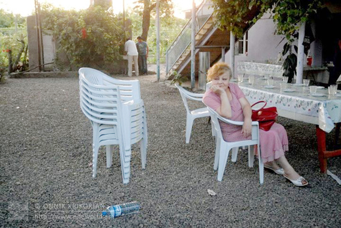